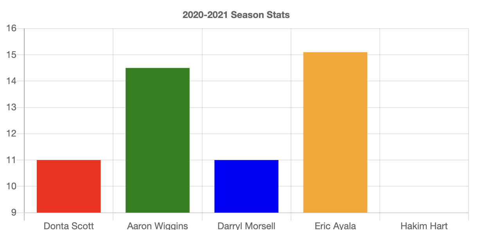
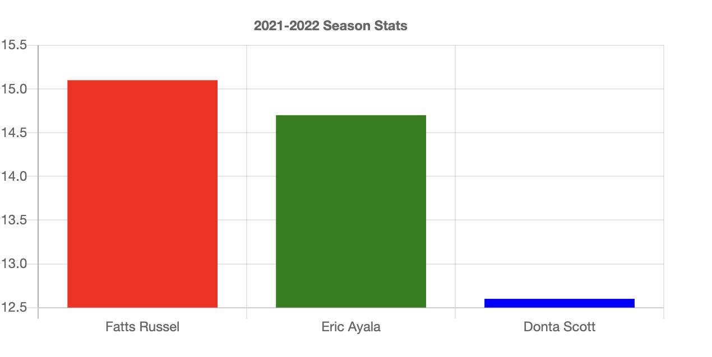

Click this link to get to check out the stats, scores, and highlights
Click this link to get to check out the stats, scores, and highlights
As the 2023-2024 Mens Maryland’s basketball season briefly started after many weeks of waiting and expectation of the team having better performance with a second year coach who led them to the second round of the NCAA Men’s Basketball Tournament. Veterans such as Jahmir Young and Donta Scott, transfers, and top recruits who joined are expected to live out their names. But before this, the team had a long journey which no one expected to happen with positives and negatives during it, but with now a new coach and a fresh team, hopes are to be expected for a better future.
In the 2019-2020 season, former coach Mark Turgeon was creating greatness for Maryland when the Terps went 24-7 and became first in the Big Ten conference. The team were led by Anthony Cowan Jr who averaged 16.3 pts, 3.6 reb, Jalen Smith who averaged 15.5 pts, 10.5 reb, Aaron Wiggins who averaged 10.4pts, 4.9 reb, Darryl Morsell who averaged 8.5 pts, Eric Ayala who averaged 8.5pts, and more players like first year players Donta Scott and Hakim Hart. The Terps started the season 11-0 averaging at least 14,000 for attendance which the highest from those eleven games was 16,690 against Illinois. The more games they had, the attendance increased. By the end of the season against No.25 Michigan, the attendance reached 17,950 people at the Xfinity Center which is briefly a sold out arena. Season tickets in the 2019-2020 were expected to be as low as $329 while students got to watch the games for free. Expectations were high, but the season ended short following the cancellation of postseason tournaments due to Covid-19. After the season it was known the only recruiting they had so far was Marcus Dockery from Washington DC, Arnaud Revaz from Switzerland, Aquan Smart from Illinois, and James Graham III from Wisconsin.
In the 2020-2021 season, where the Terps were hungry to avenge the quick ending due to Covid-19 and expected to return on top of the Big Ten. During the offseason, players such as Cowan Jr who departed and Jalen Smith who declared for the NBA Draft where no longer coming back. With the two losses, they still had the other players from the previous season including an experienced sophomore Donta Scott who averaged 11.0. Others such as Wiggins who averaged 14.5 pts, Eric Ayala who averaged 15.1 pts, Darryl Morsell who averaged 11.0 pts, and Hakim Hart who averaged 9.0 pts. With the experienced players the team had, it didn’t go their way after they finished the season 17-14 in the Big Ten where they placed eighth.They started their season with three straight wins but the next three games were canceled due to Covid. The Attendance was shown as zero because of the rules for safety. Through all of their home games, not one person could attend a game due to the Covid-19. After losing to Michigan in the Big Ten quarterfinals tournament, they succeeded in getting a bid to the NCAA tournament as the No.10 seed in the East Region. They started off a good start defeating UConn in the first round but ended up losing to Alabama in the second round. Following the season, Turgeon signed a three-year extension to remain head coach through 2026.
In the 2021-2022 season, they had two major losses with Darryl Morses who transferred to Marquette and Aaron Wighins who declared for the NBA Draft. The recruits they landed was Ike Cornish from Baltimore, Maryland and Julian Resses from Owings Mills, Maryland. They also gained transfers including Ian Martinez, Fatts Russel, Qudas Wahab, and Xaxier Green, Pavlo Dziuba, and Simon Wright. With the loss of major players in the past two years, it was expected for this season to be a journey with the help of the transfers and veterans. Finally the attendance was back averaging 12,000 in the first four games where Maryland started 4-0. Then it sank, after the loss against Virginia Tech. On December 3, 2021, Mark Turgeon and the school announced that the parties had mutually agreed that Turgeon would step down as head coach effective immediately. With that, Assistant Coach Manning was named the interim head coach for the reminder of the season. The season finished with them being placed in 10th place in the Big Ten with a 15-17 record. With the top three scorers such as Russel who averaged 15.1 pts, Eric Ayayla who averaged 14.7 pts, and Donta Scott who averaged 12.6 pts, it didn’t end to their expectation after losing against Michigan State in the second round of the Big Ten Tournament and no bid to the NCAA Tournament. With a rough season, the Terps highest attendance was 15,988 and the lowest was 9,783.
